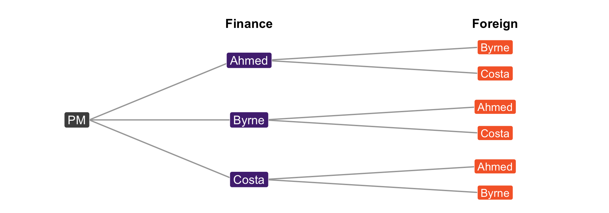
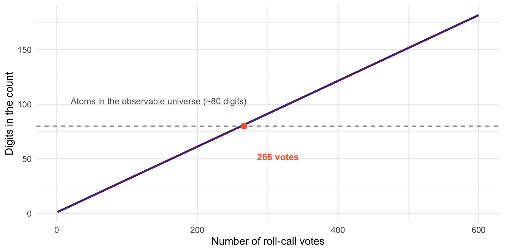
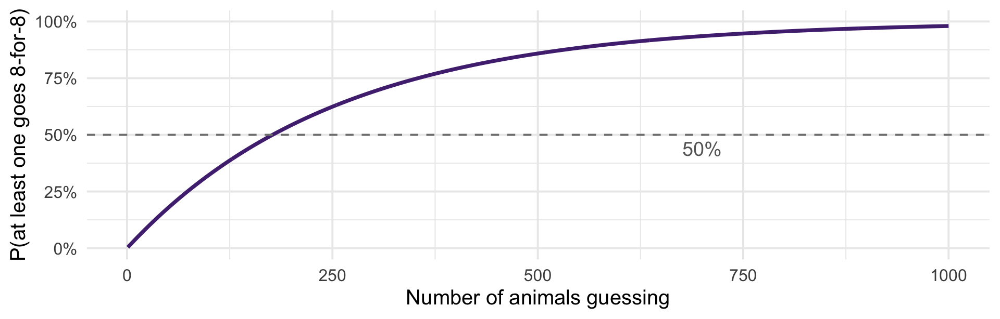

# digits in the number of possible 1,500-person samples
# from a population of 350 million
round(lchoose(350e6, 1500) / log(10))[1] 8701Sample spaces, axioms, and counting
Thus far we have described the data we have
We are making claims about populations from our samples
The ANES is 7,453 people, not 250 million
Bertrand and Mullainathan sent 4,870 résumés, not the universe of all resumes
Probability is the language for saying what a sample can tell us about a world we did not observe
We want to measure relationships between variables in the social world
Relationships in the social world are essentially never deterministic
So we need a way to measure uncertainty
Models of democratization (Przeworski 2000, Boix 2003, Acemoglu and Robinson 2006) argue that democratization is caused by economic conditions.
Let \(i\) index a country and \(t\) a year:
\[\text{Dem}_{it} = f(\text{Economic Conditions}_{it})\]
What is wrong with this as written?
\[\text{Dem}_{it} = f(\text{Economic Conditions}_{it}) + g(\text{Everything Else}_{it})\]
We usually write it this way:
\[\text{Dem}_{it} = f(\text{Economic Conditions}_{it}) + \epsilon_{it}\]
\(\epsilon\) is the error term: everything we did not model
Probability lets us quantify the strength of the relationship and our uncertainty about it
That second part is what separates a finding from a guess
You need to know what quantity you are estimating
Knowing you have the right quantity requires
Understanding probability - routinely skipped in applied stats courses
Understanding the data generating process - where theory and substantive expertise come back in
A sample space \(S\) is the set of all possible outcomes. An event \(A\) is a subset of \(S\).

This seems abstract. What are sample spaces we actually care about?
Political behavior: \(S\) = all decisions an eligible voter could make. \(A\) = voting at all. \(B\) = voting third party.
Labor markets: \(S\) = all employment outcomes. \(A\) = employed. \(B\) = searching for a new job.
Our running example: \(S\) = all outcomes for a submitted résumé. \(A\) = got a callback.
\(A \cup B\) — the union. A or B (including both).
\(A \cap B\) — the intersection. A and B.
\(A^{c}\) — the complement. Everything in \(S\) that is not in \(A\).
Worth being fluent in: “or” in probability includes “both,” unlike casual English.
What is \(P(B)\)? Looks like \(4/9\) — count the outcomes in \(B\), divide by the outcomes in \(S\).
That \(S\) is finite — often false
That every outcome is equally likely — usually false
The naive definition is fine for cards and dice, and almost never right for the social world. Voters do not turn out with equal probability. Résumés do not get read with equal probability.
But it is right for one thing we care about enormously: a randomly drawn sample.
A probability space is a sample space \(S\) plus a function \(P\) mapping events to real numbers in \([0,1]\), satisfying:
\(P(\emptyset) = 0\) and \(P(S) = 1\)
If \(A_1, A_2, \ldots\) are disjoint, then \(P(A_1 \cup A_2) = P(A_1) + P(A_2)\)
Everything else follows from this.
\(P(A^{c}) = 1 - P(A)\)
If \(A \subseteq B\), then \(P(A) \leq P(B)\)
\(P(A \cup B) = P(A) + P(B) - P(A \cap B)\)
The naive definition says: divide favorable outcomes by total outcomes
For anything non-trivial, you cannot list them
Later in the course:
The **binomial distribution** is built directly on the counting rule we derive today
**Sampling** is a counting problem, and it is the foundation of much of what we do
A Prime Minister must assign two portfolios — Finance and Foreign Affairs — and has three MPs available.

Three choices for Finance. For each of those, two MPs remain for Foreign. \(3 \times 2 = 6\).
If a first choice has \(a\) options and a second has \(b\) options for each of those, there are \(a \times b\) outcomes
Scale it up: a 25-member parliamentary party, three portfolios
25 possible Finance ministers
For each, 24 remain for Foreign
For each of those, 23 remain for Climate
\[25 \times 24 \times 23 = 13{,}800\]
\(n\) options, \(k\) choices, without replacement, order matters:
\[n(n-1)(n-2)\cdots(n-k+1)\]
Each appointment removes an MP from the pool — nobody holds two portfolios
Order matters because the posts are distinct: Ahmed at Finance and Byrne at Foreign is a different cabinet from the reverse
A legislator votes Yea or Nay on each of 10 bills. How many distinct voting records are possible?
Voting Yea on bill 1 does not use up “Yea”, it is available again on bill 2
Every one of the 10 votes faces the same 2 options
\[n^{k} = 2^{10} = 1{,}024\]
In general: \(n\) options, \(k\) choices, with replacement, order matters \(\Rightarrow n^{k}\). The cabinet was without replacement — the pool shrank. Figuring out which world you are in matters!

A session of Congress runs to several hundred roll calls. Past 266, there are more possible voting records than there are atoms in the observable universe.
You will never enumerate all those records, but you can still ask how likely is a record like this one? We move from counting outcomes to assigning probabilities to them.
It is roughly how ideal-point models like NOMINATE work: an observed voting record is one draw from a space far too large to list.
When we sample 1,500 Americans, we do not interview anyone twice: that is sampling without replacement
But the population is 250 million. Removing one person barely changes the odds for the next draw.
So we treat the draws as independent, as if we were sampling with replacement
This approximation is why the formulas we use are as clean as they are. It is excellent when \(n\) is huge relative to \(k\), and it fails badly in small populations like a village, a legislature, or a cabinet.
# digits in the number of possible 1,500-person samples
# from a population of 350 million
round(lchoose(350e6, 1500) / log(10))[1] 8701A number with 8,701 digits. The ANES you have been using is one draw from a space that size.
Probability is about what we can say when we only ever see one.
Back to the cabinet, but change the question.
Before: who holds which portfolio? → \(25 \times 24 \times 23 = 13{,}800\)
Now: which three MPs sit in cabinet at all?
Ahmed–Byrne–Costa is now one answer, but the multiplication rule counted it six times: every ordering of the same three people.
There are \(3! = 6\) ways to order three people, so we counted each cabinet six times:
\[\frac{13{,}800}{6} = 2{,}300\]
Check it on a case small enough to list. Three seats from five MPs:
(123)(124)(125)(134)(135)(145)(234)(235)(245)(345)
Ten. And \(\frac{5 \times 4 \times 3}{3!} = \frac{60}{6} = 10\).
\[\binom{n}{k} = \frac{n(n-1)\cdots(n-k+1)}{k!} = \frac{n!}{(n-k)!\,k!}\]
Read “\(n\) choose \(k\)”: the number of subsets of size \(k\) from a set of size \(n\)
Order does not matter
You will see this again shortly as the front half of the binomial PMF — where it counts which trials succeeded, not the order they came in
[1] 13800[1] 2300A ballot lists 6 candidates. How many possible orderings are there? (Ballot-order effects are a real literature — this is why randomizing order matters.)
You are selecting 4 countries from a pool of 15 for a comparative case study. How many possible sets?
A content analyst codes each of 20 documents into one of 5 categories. How many possible coding schemes?
For each: with or without replacement? Does order matter?
In the 2010 World Cup, an octopus in a German aquarium “picked” match winners by choosing between two food boxes
Paul got 8 consecutive matches right
If he were guessing, each pick is a coin flip: \(P = 0.5^{8} = 1/256 \approx 0.004\)
That is well under the 0.05 threshold you will meet in a few weeks. So: does Paul see the future?
The 2010 World Cup had many animal oracles — parakeets, elephants, other octopuses
Ask a different question: if 100 animals each guessed, what is the chance at least one goes 8-for-8?
About a 32% chance that somebody’s pet looks prophetic — with nothing but chance at work.

At 178 guessers it is more likely than not. At 1,000, it is a 98% chance.
Nothing about Paul was surprising. What was surprising was reporting on the winner and forgetting the losers.
The same idea:
A forecaster with a long streak of correct calls
A fund manager who beat the market ten years running
A researcher who tests forty specifications and publishes the one with \(p < 0.05\)
That last one is your profession. It is a large part of why the replication crisis happened!
“What is the probability of this result?” and “what is the probability that something like it happened somewhere?” are wildly different questions
Unlikely things become near-certain given enough opportunities
Always ask: how many chances did the world have?
We are not done with Paul. When we get to Bayes’ rule, we will ask what his streak should actually do to our belief that he is psychic.
Read: Probability! Chapter 2
Next class: conditional probability, Bayes’ rule, and why \(P(A|B) \neq P(B|A)\)
Angwin, Larson, Mattu and Kirchner (2016), “Machine Bias,” ProPublica
Chouldechova (2017), “Fair Prediction with Disparate Impact,” Big Data 5(2)
Technical, but read the setup and the statement of the result, you do not need to follow the math
Ask yourself as you read: what is being conditioned on, and by whom?
Two competent teams looked at the same criminal justice algorithm and reached opposite conclusions. Why?